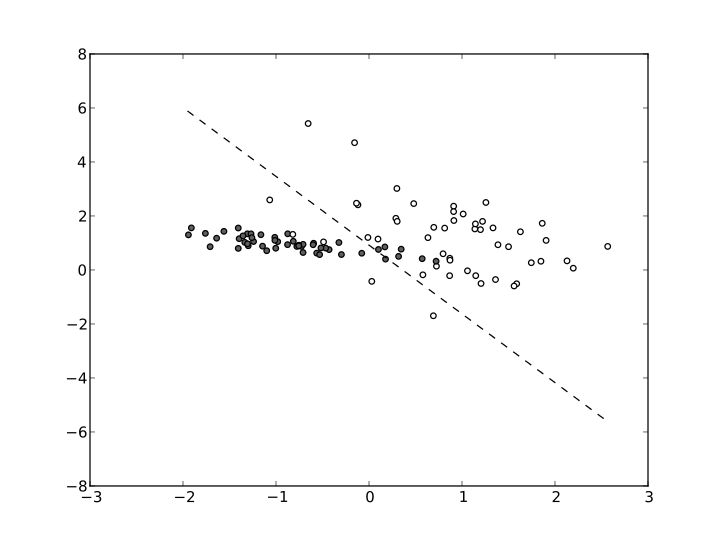

-
Module 1
26-28 octobre 2016Introduction à l'Apprentissage Automatique-
+ La machine à support vectoriel (SVM)
Beaucoup plus simple que les réseaux de neurones artificiels, les machine à support vectoriel sont pourtant extrêmement utile. Jusqu'à récemment, le SVM était la technique la plus adoptée et la plus efficace pour un grand nombre de tâches. Bien que les réseaux de neurones artificiels sont parfois plus performant, la SVM reste concurrent pour de nombreux raison.
 "
"
Image source : Wikimedia Commons
-
-
Module 2
23-25 novembre 2016Techniques Avancées de l'Apprentissage Automatique -
Module 3
15-17 février 2017Visualisation intéractive avec D3 -
Module 4
2-3 mars 2017Big Data